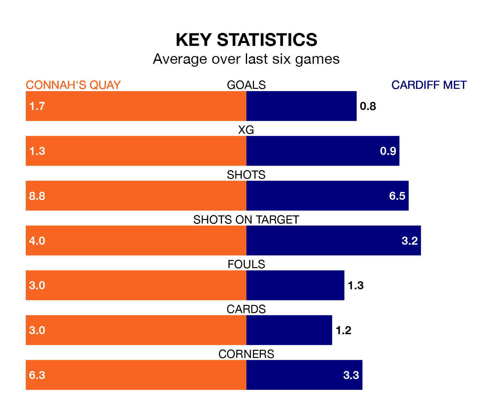

Two of the Welsh Premier League's top sides face each other at the Essity Stadium in Saturday's early kick-off, when second-placed Connah's Quay host fourth-placed Cardiff Met.
Connah's Quay have picked up 16 wins and three draws from 24 games so far this season, and sit 15 points above the visitors going into the 2.30pm match.
The Archers, meanwhile, have won nine and drawn nine, picking up 36 points.
With 63 goals in 24 games so far this season, Connah's Quay are the league's second-highest scorers with 2.6 goals per game. And they are conceding fewer than average, letting in 32 goals at a rate of 1.3 per game.
Cardiff, meanwhile, are below average scorers, with 1.3 goals per game, compared to a league average of 1.5. They have conceded 1.8 goals per game.
In the last 10 years, Connah's Quay and Cardiff have played each other on 26 occasions. Connah's Quay won 15 of them, Cardiff three, and they drew eight times.
On average, the Nomads scored 1.6 goals and the Archers 0.6 in those matches.
Their last meeting was on November 4, when Cardiff won 3-1 at home.
The Nomads are in good form in the Welsh Premier League, with four wins and a draw from their last six games.
With no wins and four draws over that period, the Archers's form is much worse – they have taken four points from 18, compared to the home side's 13.
Connah's Quay's last match was on February 10, a 3-2 win against Newtown, with Jordan Davies (two) and Jack Kenny getting the goals for the Nomads.
Cardiff drew 2-2 with Caernarfon Town last time out, also on February 10, with Eliot Evans and Thomas Owen Price on the scoresheet.
Updated: 09:02 (UTC), 13/02/24